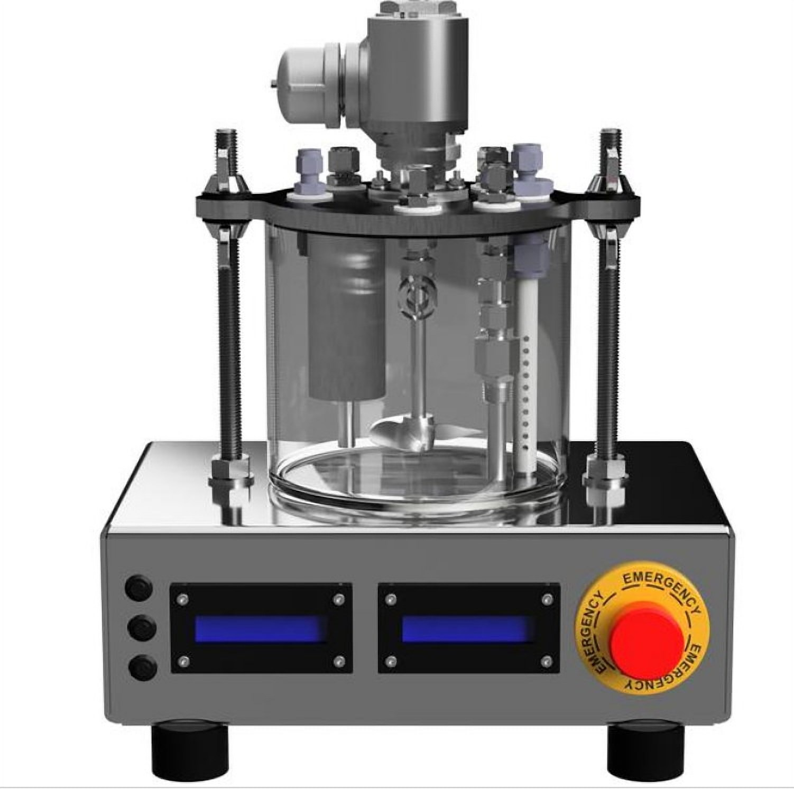
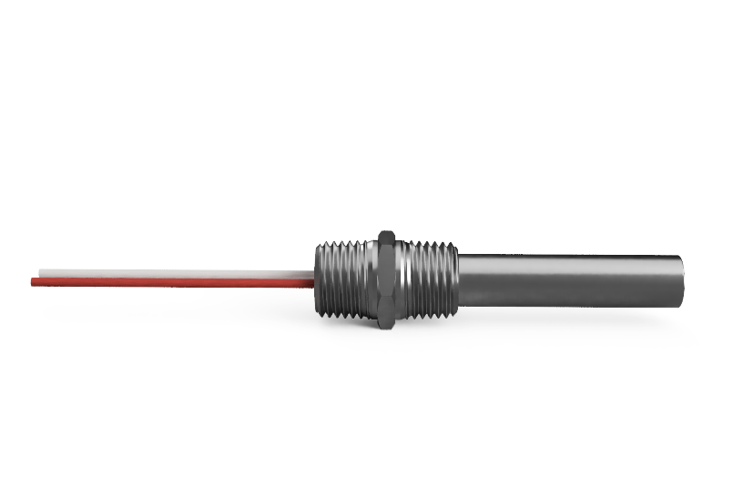
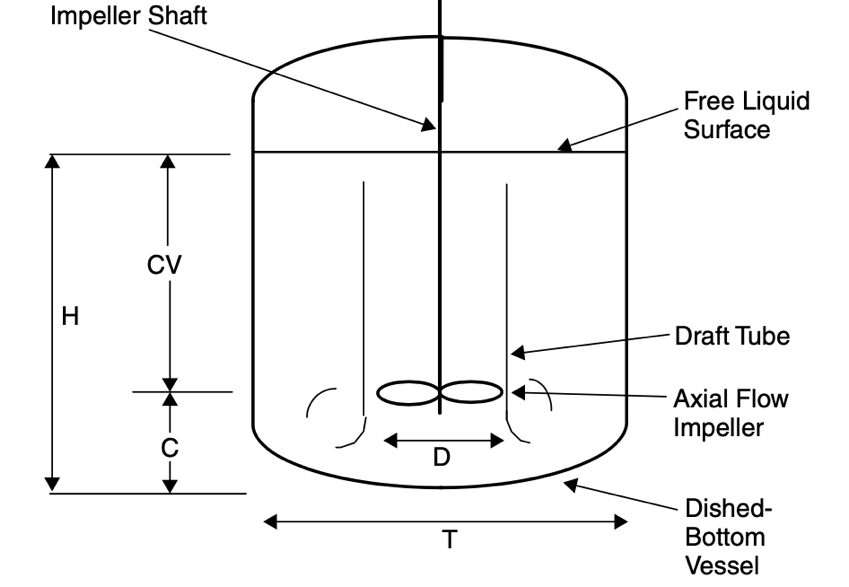

Cow Rumen Digestion Simulator
Digest-A-Bull is an instrumented, sealed benchtop bioreactor that recreates a cow's rumen so an agricultural lab can run repeatable anaerobic-fermentation studies. As mechanical design lead on a 10-person capstone I owned the heating, the mixing, and the sealed glass vessel and lid. PID-controlled immersion heaters held the culture to within 0.1 °C of setpoint from 30 to 50 °C, the impeller I sized kept corn-syrup-thick fluid turning at speed, and the enclosure passed an IPX-5 water-ingress test, the conditions a usable rumen simulation depends on.

Show full breakdownHide breakdown
The problem
Rumen-fermentation studies only give valid data if the biology is held steady, and the client's needs were specific: hold temperature close to setpoint and reach it within an hour, keep thick, settling contents mixing at a set speed, and stay sealed and anaerobic while logging temperature, pressure, methane, and pH. The team selected each subsystem with Pugh-chart trade studies across competing concepts; I took the heating, the mixing, and the vessel.
Approach
I sized the heaters from a lumped energy balance: bringing the charge from 20 to 50 °C takes about 188.5 kJ, which I covered with two submerged rods totaling 150 W under PID control, while a thermal-resistance model of the lid, walls, and base set the expected heat-up time. For mixing I sized a pitched-blade, axial-flow impeller and its shaft from the Reynolds number and torque in roughly corn-syrup-viscosity fluid, driven by a 12 V motor under proportional speed control. The vessel is borosilicate glass with a sealed lid carrying a pressure-relief path and ports for a PT100 probe, differential pressure, methane (MQ-4), and pH.
Key tradeoffs
- Immersion rods over a jacket or unit heater: the legacy unit heater scorched the fluid boundary layer; two submerged rods add heat gently below the fluid line and keep working if one fails.
- Pitched-blade axial impeller over radial: axial flow moves thick contents top to bottom to keep solids suspended, rather than just spinning the surface.
- Borosilicate glass with 316L wetted internals: scientists needed to see the contents were actually mixing, and both materials shrug off constant immersion.
Results


Validation and limits
- Temperature validated against a written protocol at five setpoints from 30 to 50 °C: steady-state error stayed between 0.04 and 0.10 °C, cross-checked against a separate thermometer.
- Mixing held within about 1.5 rpm of setpoint at 100 and 120 rpm with under 1 rpm of spread, confirmed by tachometer; the sealed unit passed an IPX-5 water-ingress test.
- Temperature precision floored near 0.1 °C, a limit of the sensors rather than the controller; reaching 0.01 °C would need better instrumentation.
- In 3000 cP fluid the motor was torque-limited and could not reach its 150 rpm top speed, holding about 142, and the methane sensor saturates at 10,000 ppm; both are the first items for a next revision.